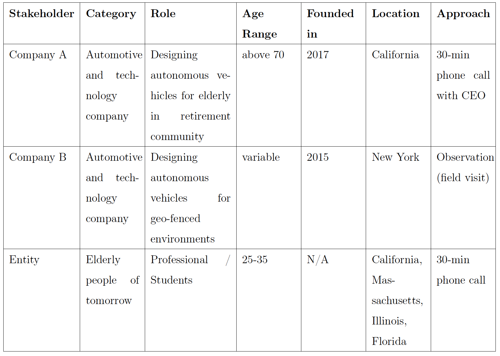
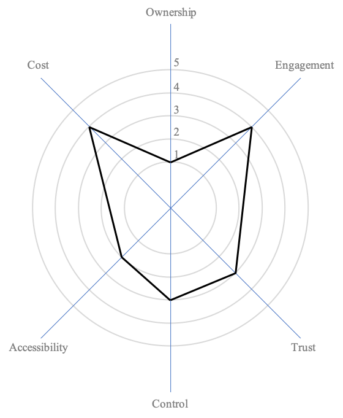

Autonomous vehicles are approaching the market faster than we imagined and the ageing population is growing year after year. Today the world is facing several challenges related to personal mobility like traffic congestion, pollution, road accidents, and many more. The autonomous vehicle is a promising technology that has the potential to address some of these challenges. While we consider personal mobility, there is an opportunity to introduce autonomous vehicles for the ageing population. Right now, we are designing the technology keeping potential users in mind, which may not include the older persons. Since this technology is at the initial stage, we could intervene and design a better inclusive technology irrespective of age and health conditions. In this research, we are applying human-centered design approach to study autonomous vehicles and elderly people of tomorrow. We have leveraged various qualitative research methodologies and a human-centered design approach to better understand the domain. As a result, we are proposing a novel framework which might help us design a better inclusive technology for the future.
With this research we aim to make autonmous vehicles or automated driving features more relatable to target users and increase the likelihood of better adoption. We are studying problems faced by older adults, advantages of autonomy, needs of tomorrow's elderly, and recommending an inclusive design framework for the automotive industry. These recommendations will help automotive companies to prioritize their design choices and features for a widespreaad adoption of autonomous vehicles and creating a better ecosystem of autonomous driving.
In order to study the state of elderly people and autonomous people, we will apply human-centered design research approach taught at the Integrated Design & Management (IDM) program at MIT. The process flow of the research is shown in the figure below and is identical to popular design thinking framework.
Why is human-centered design process important for this study? This study is about the technology which is in the research and testing stage. Users do not have an option to take a ride on fully autonomous vehicle and experience the ride. The topic is more futuristic which requires a lot of creative thinking. Since this study is about understanding the automotive sector and behavior of end users, but the AV technology cannot be tested with users at the current location, we decided to focus on first 3 stages of the design thinking process – Explore, Express, and Create.

RQ 1: What are the pain points with the available autonomous vehicle technology?
RQ 2: How does older people feel about the autonomous vehicle technology? What are the pain points with their current mobility?
RQ 3: What is the perspective of tomorrow’s elderly people towards autonomous vehicle?
RQ 4: What kind of features that are needed to create an inclusive design experience for elderly population?
For Company A, the approach is to apply in-depth interview to collect information about individuals' perspectives and experiences.
For Company B, we took a different approach and applied Observation research method. In this particular type of research, observer is supposed to observe things in a natural setting, active listening, and questioning people.
We were taking a ride with two other people where the first one was sitting on the driver seat and the second one was checking the software (geospatial information) on the computer. The results of the observation are listed below.
| # | Company A | Company B |
|---|---|---|
| Age Group | Average age of customers is near late 70s and living in a retirement which is built around activities, support and built for slow driving. | Age group varies a lot. People who wants to go to a ferry station they have an option to use our service from the source. |
| Speed & Time Spent | Company A is providing services where maximum speed limit of their car is 25 miles per hour (mph) and average time spent on a ride is 12 mins. | The car was able to maintain a constant speed of 25-35 miles per hour (mph) and was able to perform turns at the junction without any human input. It takes around 5-6 minutes from source to destination. |
| Travel Route Map | Customers like to go to doctors for medical appointment, meet friends, community centers, and sometimes work. | We learned Company B is operating in a geo-fenced area where pedestrians are not allowed. And, they only have 2 different routes where they have around 500 rides on weekdays and 100 rides on weekends. |
| Concerns | Customers are concerned about comfortability and less worried about trust. CEO mentioned seniors have to pay more insurance for driving as they are more prone to accident. | As a passenger, we didn’t have a screen to look at the ride information. Passengers can take a look at the software which will highlight – a) the spatial map of the route, and b) Identify objects around the vehicle. |
| Accessibility | Company A is also focusing on accessibility to make it easier for the elderly to use their app. They have bigger font size, voice over services, integrated payment to help the elderly and make it simple for them. Moreover, they are also leveraging vision accessibility features of iPhone. | To start the journey, operator has to input the destination in the system and press a ‘Start’ button. |
| Pain Points | The major pain point for Company A is to find a parking spot in the community when vehicle is not providing a service. There was a time when our vehicle took one of the community spots. This is a stressful situation as we are trying to find ideas to solve this challenge. | - |
| General Perspective of users | People cannot drive because their muscles are weak which makes driving difficult. Though they don’t give up driving, they will find ways to drive in a sunny day. | There were no pedestrians on the street (maybe it was a weekend and a rainy day) so it was a smooth ride. Moreover, we couldn’t feel any difference in comparison to a regular car. We felt safe and enjoyed my ride. |
To conduct this qualitative research, 15 participants (students and professional) were selected age ranging from 25 to 35 years. All of them were located in United States and have experienced ride-sharing before. However, they have not experienced an autonomous vehicle ride.
Overall looking from a broader perspective at the user interviews, people are excited about the futuristic autonomous vehicle. They are looking forward to using it, but uncertain on how much trust they can have. Moreover, they are also hesitant to use autonomous vehicle as a primary mode of transportation on a daily basis. Because they enjoy the independence and pleasure of driving anywhere at any time. Participants are not aware of advance driving features; they use some features provided by the manufacturer. There is a gap of automotive education which is required to create awareness of autonomous vehicle and advanced driving features. In addition to this, participants also like to interact with the driver or co-passenger. There is a human element involved in today’s ride experience, we have to propose a way to preserve the humanness nature and transition to a new transportation era.
Keeping stakeholders needs and importance of new technology in mind, a few brainstorming sessions were needed to come up with a framework which will help companies to build a better mindful product for the end users.
Our research gives rise to a novel framework which includes six critical properties – Ownership, Engagement, Trust, Authority, Accessibility, and Cost. The results from the research insights and interview with companies has led the foundation of this framework. While working on these properties, we decided to keep a score for each property, so to isolate the property which needs more attention. The total score will enable us to create a standard to evaluate the overall efficacy of the system. This framework specifically applies to autonomous vehicle industry where companies can evaluate their offerings by scoring each property on a scale of 1 to 5. The strategy is to construct an optimal hexagon inside a circle with maximum score possible. Figure below shows the framework with an optimal hexagon.
Optimal hexagon framework
Hexagon with score (Ownership - 1, Engagement - 3, Trust - 3, Control - 2, Accessibility - 1, Cost - 2)
Hexagon with score (Ownership - 1, Engagement - 4, Trust - 3, Control - 3, Accessibility - 2, Cost - 4)
In this study, we limit our research to elderly people of tomorrow. In the future, we would like to take this research further and perform validation and testing of the framework. Given more time and a better situation, we would like to -
There is more work to be done with this framework. This framework is in the initial stage, testing it with different scenarios is important to prove the efficacy of the framework. Moreover, evaluating companies who are offering ride in an autonomous vehicle using this framework will provide an opportunity to offer an unparallel high quality service.